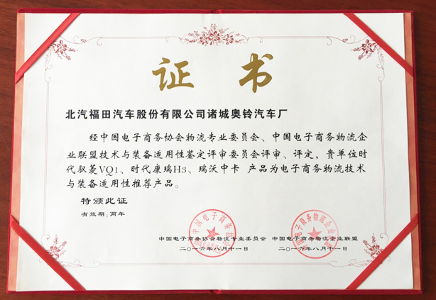
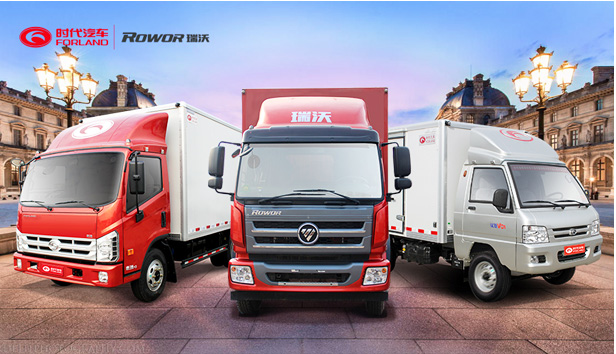
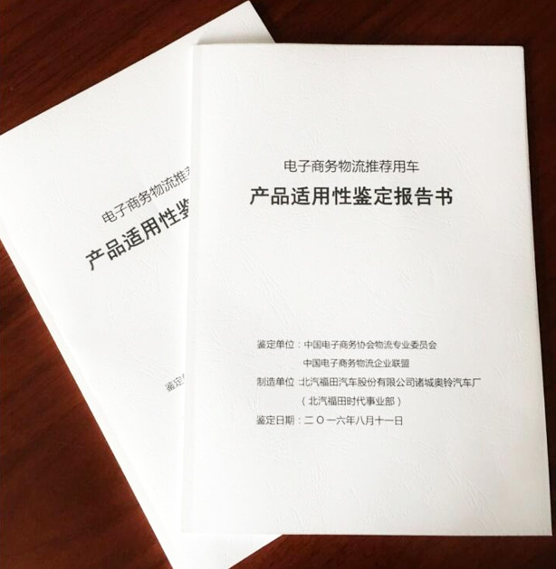

作者：暂无 出处：暂无
近日，经中国电子商务协会物流专业委员会、中国电子商务物流企业联盟技术与装备适用性鉴定委员会评审、评定，福田汽车时代事业部三款产品—时代驭菱VQ1、时代康瑞H3、瑞沃中卡成功入围电子商务物流技术与装备适用性推荐产品。
日前，中国电子商务协会物流专业委员会、中国电子商务物流企业联盟对福田汽车时代事业部开展了“电商物流技术与装备适用性鉴定”工作。8月11日，鉴定委员会专家莅临福田汽车时代事业部，对时代驭菱VQ1小型车、时代康瑞H3和瑞沃中卡三款产品进行鉴定，并进行了交流座谈会。经评审委员会评审、评定，时代驭菱VQ1、时代康瑞H3、瑞沃中卡三款产品成功入围电子商务物流推荐用车。
据了解，技术与装备适用性鉴定评审委员会专家包括了原中国物流与采购联合会副会长戴定一，中国电子商务协会副理事长陈震，北京宅急送快运股份有限公司监事会主席陈显宝，山东交通学院教授何民爱，中国电子商务协会物流专业委员会、中国电子商务物流企业联盟秘书长干为等优秀行业专家、学者。
评审意见认为，时代驭菱VQ1、时代康瑞H3、瑞沃中卡分别定位微卡、轻卡和中卡市场，抓住了当前电商物流配送热点市场，定位准确，适应电商物流产业转型升级的迫切要求。产品技术先进，综合性价比高，人性化设计符合客户需要，适应城市物流快速发展方面，具有引导作用。此外，产品强调安全与节能环保，符合国家绿色发展要求，相关技术指标在国内处于领先水平。该产品的推广使用，对推动我国电商物流产业转型发展具有重要意义。据了解，鉴定《证书》以及《产品适用性报告书》已于日前颁发。
电子商务物流推荐用车产品适用性鉴定报告书
此次福田时代三款产品入围电子商务物流技术与装备适用性推荐产品，标志着福田汽车时代事业部已成为中国物流行业持续健康发展的协同力量，也标志着时代/瑞沃产品在电子商务物流体系领域有了行业专业的认证和新的突破。